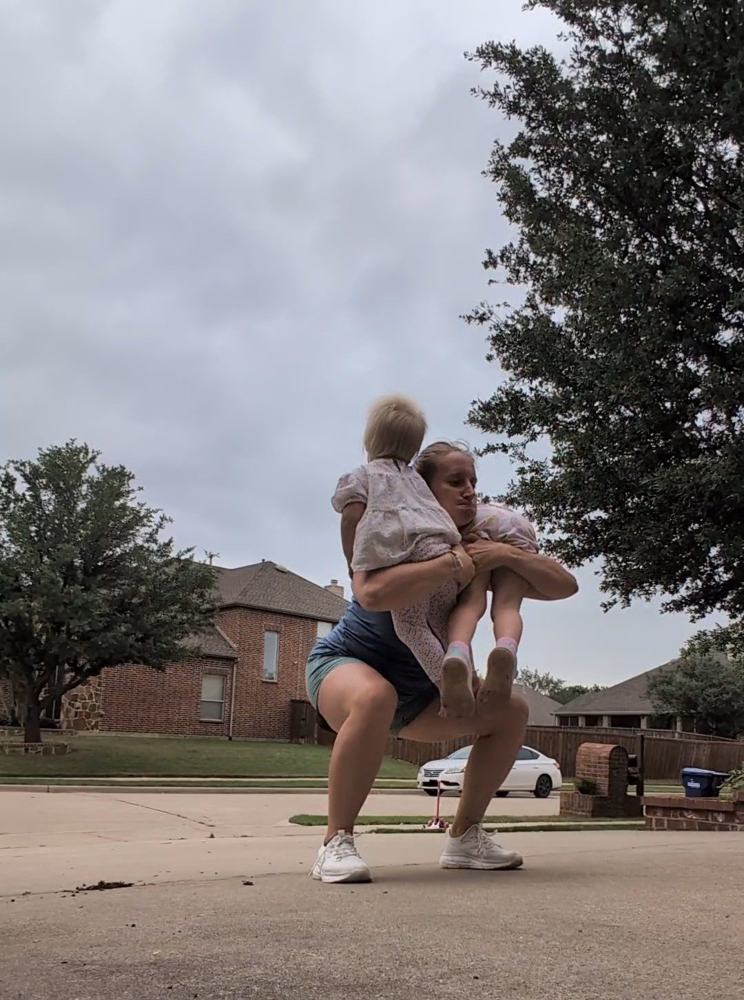

Coaching for overwhelmed moms who want more balance and space for themselves
Like… taking a shower and having time to actually wash your hair
Hey mama, it's time to swap your triple-shot-espresso for things that actually refuel you.
Here's the down-and-dirty…you absolutely adore this tiny human you've created and your sweet family life, but you've kind of lost yourself in there somewhere.
The baby's needs are your top priority (duh, of course they are). But so is your marriage, your job, your friends & family, and that mountain of 1,000 tiny pieces of laundry.
And somehow, you're doing all of it with the same 24 hours you had before — just with more mouths to feed each night (who never want to eat the same thing), plus the mental load of keeping track of everyone else's needs.
- Your partner doesn't quite get it, because they don't have that “I have 48 minutes until I need to be home to feed the baby” thread constantly running through your brain.
- You can't just “wake up early” when the baby is sleeping skin-to-skin and there's no such thing as waking before them without waking them, too.
- You can't leave the house alone without coordinating your partner's schedule, the feeding schedule, your energy levels, and your friends' schedules. So you just…don't.
You don't recognize who you see in the mirror, but stuck in a constant cycle of fatigue, it's hard to find the motivation to move your body or rebuild your confidence. Life fills up with all the things that seem important (and most of them are) — and it's easy to let it wear you down, focus only on the baby, and let the guilt (and fatigue) keep you from doing anything else.
What you really want (nay, need) is some breathing room that's yours and yours alone. Space for yourself, in your own life.
It starts the moment they're born — postpartum is the heaviest hit, when your whole identity gets swallowed by feedings and healing and keeping a tiny human alive. But it doesn't stop there. Year after year, mom quietly gets put on the backburner, while everyone else's needs move to the front of the line.
Taking care of your body, your mind, your soul — that's not selfish, it's what gives you the energy to pour back into your family. You want to feel like yourself again. To love your body, rebuild your confidence, find the things that make you excited and joyful. To find your spark again.
Because when a baby is born, so is the mother. And she deserves care too — not just in those first six weeks, but for every year that follows.
But if it were that easy to do, you probably would have already.
You've likely already tried something like…
- You restarted your therapy sessions (which has helped you feel so much better, but you're ready to get to more of the DOING than the FEELING)
- You joined the neighborhood gym (but you can't figure out how to GET there before it's naptime again)
- You tried subscribing to the “5 easy new-mom-habits” from that IG account (but you didn't get past opening the email)
- You bought a bunch of fresh groceries to cook with (but half of the produce went bad before you got around to using it)
- You downloaded that meditation app (but how on EARTH is anyone supposed to meditate for 20 minutes?!)
And it's not that you haven't tried, so give yourself the credit you deserve. It's that you haven't tried a plan that's specifically tailored to YOU. With your baby's sleep needs, your feeding schedule, your job demands+commute, and your general familial/household needs. Following a bunch of generic wellness hacks won't get you very far. Because while your sister may be juggling three kids, the truth is she's a SAHM, and you work full-time. So it's just different.
You can't just AI-your-way to a better life.
I can't even begin to add up all the different pieces of advice I've received, lists of “must-dos for new moms,” or educational talks I've heard. And that's just it: it's not more information we need, at least not for the most part. Any one of us can Google “how to workout with a clingy newborn” or ask AI to “help me make a grocery list.” But how do I actually build those into my own life? If you're struggling to build your path to wellness, you could probably use a cheerleader to keep you motivated, a mentor to guide you along, and a buddy to keep you accountable as you go. Some things are just way harder than they need to be when you try to white-knuckle it alone.
So let's ditch this myth that we're being ‘bad mothers’ for wanting to go to brunch…solo. Because I'm here to argue that it actually makes you a BETTER MOM by finding the little things that you enjoy. Yes, even if that requires you to step away for a few hours.
The Motherhood Reset.
Because moms are wonderful at giving. We give endlessly. But the real shift happens when we start giving back to ourselves. So we work through three overarching steps:
Release
our expectations of what motherhood should look like (whether dictated by ourselves or those who influence us)
Redefine
what is important right now: our values, our needs, and our desires (the rest is just noise)
Rebuild
your life based on what actually matters and not what your neighbor tells you is important.
In this program, I'll help you come up with a realistic plan that's tailored to your life (that you can actually stick to). I want to help you be able to take care of yourself (so that you can feel good in your own body–and not strung out on espresso), and to seek out the things that bring you joy, in addition to being the mama of your sweet baby. We'll figure out what you truly value, and find ways to help you live your life in alignment with that.
And I've been where you are, now. I've been a 40+hr working mom, with no family in a 1000-mile-radius. I've been a mom of one and then two (plus a sweet fur baby). I've been a hybrid WFH mom. I've had kids in daycare, in-home daycare, and I've lived the nanny/au pair life. I've been a SAHM. I've done many bedtime routines in a row by myself, followed by getting-out-the-door routines the next morning, while my husband was travelling to the other side of the country on repeat.
Each season has its own [very different] challenges. But the one thing that stayed constant, was that I knew I had to find some space for ME in there, too. Because if I shrivelled up and became a shell of myself, what kind of mother would I be? I know what it's like to feel like there's never enough time, but to know, deep down, that I have to find it.
And in addition to climbing my way out of the trenches, I'm a Registered Nurse of 14+ years and a Board-Certified Nurse Coach. I take my knowledge of the human body and combine it with the understanding of human behavior, via the lens of a mother who gets it.
If you're still wondering if I know what on earth I'm talking about, here are some reviews from women I've worked with before:
Working with Ellen was a huge help! She helped me get together a game plan for how to prioritize my needs instead of pushing them to the bottom of my list to do everything else first. She was easy to talk to, helpful, and kind. I would absolutely recommend working with her!— Emma K.
Despite having a very supportive spouse, there are certain aspects of motherhood he can't understand and I don't have the capacity to effectively verbalize my needs on my own. Ellen's philosophy is perfect for me because she is genuinely and practically supportive, as a mother to young children herself, while also keeping it science-based due to her impressive nursing career and medical expertise. In just our first coaching session, I walked away resolved with actionable goals. I discussed the session's distilled insights with my husband and we ended up having a very productive, healthy conversation! Highly recommend this to every mother, but especially new ones!!!— Joyce Y.
She is an amazing listener and helped me set manageable but actionable goals for myself and my health. I enjoyed brainstorming ways to prioritize exercise in the midst of busy mom life and I also appreciated the thoughtful questions she asked to help me think about how to improve the way I talk to and about myself and treat myself as a priority which is sometimes difficult to do as a stay-at-home-mom! I highly recommend postpartum coaching with Renewal Wellness Coaching and Coach Ellen!— Emily G.

After going through the Motherhood Reset program, moms find that they are actually able to enjoy being a mother again. Once you lean into the idea that filling your own cup is a need and not a want, it's easy to see the confidence that is built.
Focusing on yourself will bring you more energy and lower the stress you carry around every day.
Moms often feel healthier and stronger, because sprinkling in some strength training with those “warm, weighted, grow-with-me” baby carriers will do that to you! You'll find that you're less irritable and impatient, more at-ease and balanced. Who could say no to having a mom who is more loving, happier, and fuller?
So, this program is for you if…
- You're so over the fact that you never get a spare minute alone…but yet you're so overWHELMED with the reality of making that happen
- You're tired of putting yourself last and ignoring your fatigue and your stress…but you feel like you've tried to make that happen, and you're feeling more drained than ever
- You long to rebuild your strength and your confidence…because you barely recognize the person in the mirror
- And of course…you're willing to put in some work! Because this doesn't just happen overnight
And keep moving along if…
- You're fine with the way things are (things aren't that bad)
- You don't see a way out or a way you could possibly do anything for yourself (you have to believe it's possible!)
- You like to do the bare minimum or you're not ready to put in the effort (if this were easy, you would have done it already)
- There is zero flexibility in your life/schedule to get creative and find some space for you (if motherhood has taught us anything, it's the necessity to be flexible)
- You're in active addiction or a domestic violence situation. Please SEEK PROFESSIONAL HELP or shoot me a message if you don't know where to start. I'm always here for you to come back to when you're ready
The Motherhood Reset
(3 month commitment)
$700 if paid-in-full
This is a founding client rate as I refill my Motherhood Reset spots.
Rates subject to increase as spots fill up.